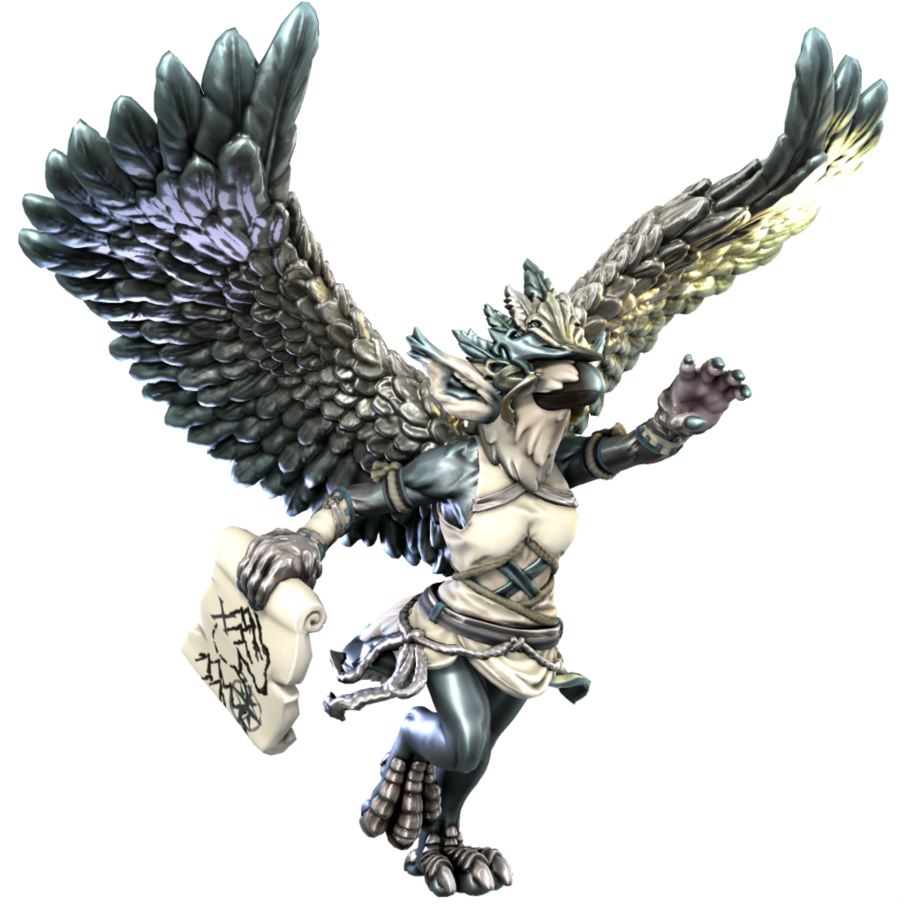

Hermet

Daemon of exploration
Hermet embodies the sapient urge for exploration, to see new places and unshroud the edges of the map. They take the form of a bird and appears often to travellers, guiding them to new discoveries.
| Language | Name | Pronunciation |
|---|---|---|
| Common | Hermet | hɜmɛt |
| Dracean | Kuros | kʊrɔs |
| Uttic | Hjorm | hjɜum |
| Noordic | Krússe | kruʃ |
| Jotic | Hjom | hjɔm |
| Atkani | Khiru'ma | kɪru'ma |
| Savonic | Ma'khi | ma'ki |
| Kushite | Mir'kir | mir'kɪə |
| Loxan | Irumet | ɪrumɛt |
| Parbati | Qirim't | khɪrɪm't |
| Scutian | Hjimit | hjɪmɪt |
| Servian | Kirimet | kɪrɪmɛt |
| Kypritic | Herme | ɜrmi |
| Ataithan | Ormte | ɜrmeɪt |